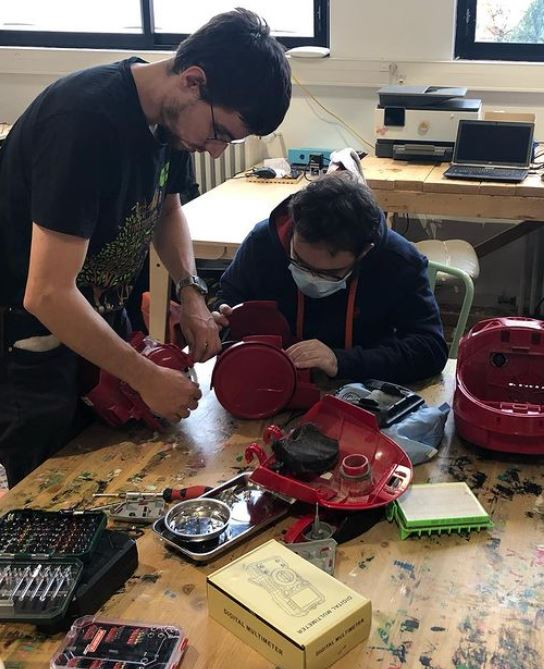

Reparateur
Déroulé de l'evenement
Les personnes sont acceuillies à l'entrée du repair café par un organisateur qui va vérifier les inscriptions puis les diriger vers un réparateur disponible. Il y a en général un peu d'attente, une zone est dédiée à cet effet. En tant que réparateur, vous n'avez qu'à attendre derrière votre paillase, les personnes viendront à vous. On se donne 40 minutes maximum par objet, et la consigne a été donner d'amener un objet par personne.
Avant la réparation
Les "Repair café" sont des moments d'échanges et de convivialité. L'acceuil que vous faites à la personne qui apporte un objet est primordial. N'oubliez pas que la réparation se fait en collaboration avec elle. Vous pouvez obtenir quelques précieux renseignements avant de vous lancer, ce qui augmente les chances de réparations et peut permettre de mettre la personne plus à l'aise.
- L'objet a t il beaucoup servi ?
- A qui appartient-il ?
- La personne a t elle un attachement particulier à cet objet ?
- La personne a t elle chercher à le réparer elle même ? Sinon pourquoi?
- Selon le type d'objet, vous pouvez installer un dialogue et échanger avec la personne sur ses habitudes, ses gouts….
Par exemple, j'ai le souvenir d'une personne agée dont le magnetoscope était en panne. Elle était trés attachée à sa collection de film en cassette. J'ai pu sortir la cassette qui était coincée à l'interieur mais pas pu le réparer. Nous avons ensuite chercher ensemble sur le Bon Coin des magnétoscopes bon marchés et pas loin de son domicile.
Pendant la réparation
La réparation se fait à deux. Si certaines opérations peuvent être faites par la personne, n'hésitez pas à lui demander si elle veut les faire. A noter que réparer un objet peut se faire en plusieurs fois. La session s'arretera peut être au diagnostique de panne ou à la commande d'une pièce de rechange, voir de l'achat d'occasion. Si vous le souhaitez, vous pouvez donner RDV à la personne pour continuer la réparation, dans le cadre d'un futur repair café ou pas.
Quelques conseils
- Avant de démonter, regarder sur internet si la panne est connue
- Démonter l'objet hors secteur
- Lors du démontage de l'objet, prendre des photos qui aideront au remontage. Classer les visses dans l'ordre du démontage…
- Une fois démonter, vous pouvez vérifier la présence de tension avec un multimètre (il peut y avoir une batterie ou des condensateurs encore chargés)
- Remettre en tension une fois l'objet remonté. Si votre réparation a crée un court circuit, il peut y avoir des projections.
- Si vous êtes amener à faire des soudures, porter des lunettes de protection. Même chose pour la personne qui apporte l'objet.
- Demander conseils aux autres réparateurs si vous n'êtes pas sûr.
La charte des repair café
Les repair café sont des évenements suivant une charte que voici.
Gratuité
Les activités au Repair Café sont effectuées gratuitement par nos réparateurs bénévoles.
Participation des visiteurs
Les visiteurs restent présents et participent à la réparation autant que possible. Ils aident ou réparent avec les conseils d’un bénévole, dans le but d’ancrer le réflexe de réparation.
Un seul objet
Pour permettre au plus grand nombre de participer, les visiteurs ne peuvent présenter qu’un seul objet à réparer. Une forte affluence peut nous conduire à anticiper la fermeture de l’évènement.

Pièces de rechange
Repair Café ne s’engage pas à fournir les pièces détachées ou consommables nécessaires à la réparation. La fourniture de la pièce de rechange est à la charge du visiteur qui pourra venir la faire remplacer lors d’un prochain événement.
Engagement
Les réparateurs font de leur mieux pour remettre en état de bon fonctionnement les objets présentés sans obligation de résultat. Un objet non réparé ne sera pas systématiquement remonté. Les visiteurs seront alors responsables de son élimination appropriée.
Garantie
Les réparations effectuées dans le cadre des événements Repair Café ne donnent lieu à aucune garantie sur les objets réparés.
Responsabilité
Les réparateurs ne peuvent être tenue responsable des dommages occasionnés aux objets pendant et après l’événement.
Transactions en dehors de Repair Café
Les événements Repair Café ne peuvent être utilisés comme relais pour des transactions commerciales entre bénévoles et visiteurs.